This chapter follows the system through the five flows that constitute its working life — a pre-booking, an entry by a booked vehicle, an entry by an unbooked walk-in vehicle, an exit, and an operator intervention — and then places those flows on the network and inside the gate firmware. The sequence diagrams are not schematic: each message corresponds to a route or a database write that exists in the repository, and the alternative blocks correspond to the refusal branches that Chapter 8 described.
Every operation in AutoPark is a variation of one pattern: a client or a camera sends evidence to the server, the server reads the current state of the lot, applies one policy, writes one transaction, publishes one event and replies with an explicit outcome. There are five such flows. The booking flow binds a bay to a plate before the vehicle arrives. The booked-entry flow consumes that booking and turns it into a session. The walk-in entry flow creates a session without a booking, taking the lowest-numbered free bay. The exit flow closes a session, frees the bay and produces the bill. The operator flow is the exception path: it releases a bay, resets the demonstration, or inspects why a decision was taken. No other flow can change the occupancy of a bay, which is what makes the occupancy invariant checkable by inspection.
A driver selects a bay, a plate, a vehicle category and an expected duration on the pre-booking page. The client posts the request with the driver's bearer token to /api/bookings/pre-checkin. The server normalises the plate, rejects it if it has fewer than four characters, rejects the request if the driver already has an active session, rejects it if the same plate is already inside the lot, and resolves the bay: the requested bay if it is still free, otherwise the lowest-numbered free bay. The bay is marked ALLOCATED and the booking is written with status PENDING_ARRIVAL and an expiry of the requested duration. Two events are published — booking.created and, if the bay changed, slot.released for the bay that was given up — and the response returns the bay number that the driver is promised.
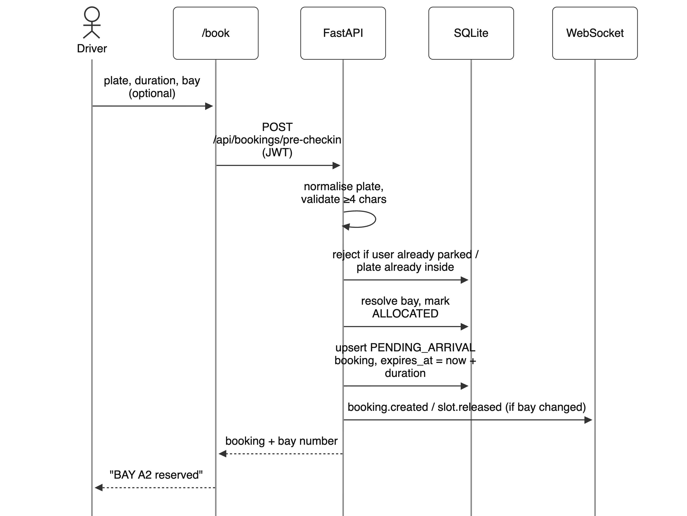
The visible result is the pass screen, which names the bay, its zone and its location within the lot. From that moment the bay is not offered to any other driver, and the entry allocator will bind that specific bay rather than the next free one. This is the flow that makes Objective 3 testable: the promise is a bay identifier, not a zone.
The entry node captures a frame, posts it to /api/detection/entry and waits. On the server the frame passes the quality gate, the detector locates the plate, the four preprocessing variants are read and the burst vote produces a ranked candidate list. The candidates are compared with every booking that is still PENDING_ARRIVAL. If exactly one booking scores at least 0.72 and is separated from the runner-up by 0.10, the allocator binds the booking's bay, marks the bay OCCUPIED, marks the booking CHECKED_IN, creates an ACTIVE session and writes a detection event. The response carries status: allocated, the bay, and open_barrier: true. The firmware reads that boolean, sweeps the servo to 90°, holds for five seconds and returns to 0°.
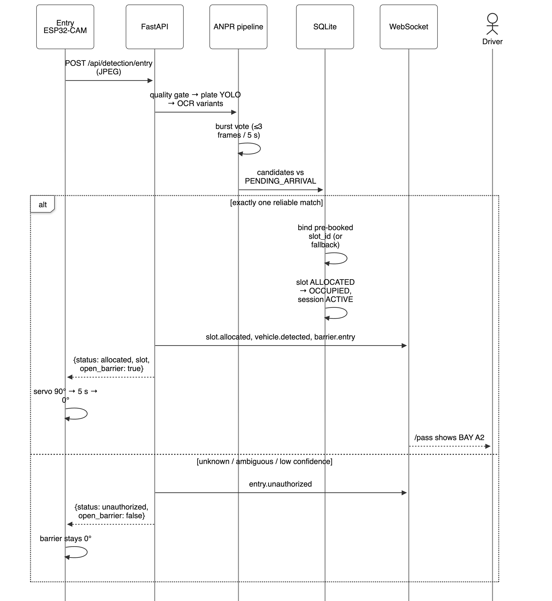
The lower half of Fig. 11 is the branch that matters most. If the plate is unreadable, unknown, or matches two bookings, the status is no_plate, unauthorized or ambiguous respectively, open_barrier is false, and the firmware does not move. The event published on the WebSocket channel carries the plate, the confidence and the failure stage, so the operator console shows the reason rather than a generic denial. The whole branch is one code path with three exit labels, not three separate implementations, which is why a defect in the refusal logic cannot affect only one status.
A walk-in vehicle is mechanically identical to a booked one and differs in a single decision: when no booking matches, the allocator consults the walk-in policy. If admission is enabled and a bay is free, the lowest-numbered free bay is allocated, the bay is marked OCCUPIED, a session is created with no booking reference, and the response names the bay so that the driver can be told where to go. The live dashboard highlights the newly allocated bay and the arrival callout names the plate and the bay, which is what allows an unattended lot to route a spontaneous arrival without a printed ticket. If the walk-in policy is disabled the same request returns unauthorized, and if no bay is free it returns parking_full — a different message, because the driver's problem is different.
The policy switch is a deliberate operational choice rather than a hidden default. A facility that promises every bay to advance bookings sets it off; a department lot that must not turn away staff sets it on. The setting is read on every request, so it can be changed without a restart, and the audit row records which path was taken.
The exit node posts to /api/detection/exit in exactly the same way. The candidates are now compared with ACTIVE sessions instead of pending bookings. A unique match closes the session, stamps the exit time, returns the bay to AVAILABLE, completes the booking if there was one, computes the duration in whole minutes and applies the tariff. The response carries the released bay, the duration, the amount and open_barrier: true; the client renders the receipt, and the WebSocket publishes slot.released, vehicle.exited and barrier.exit so that the dashboard and the operator console update together.
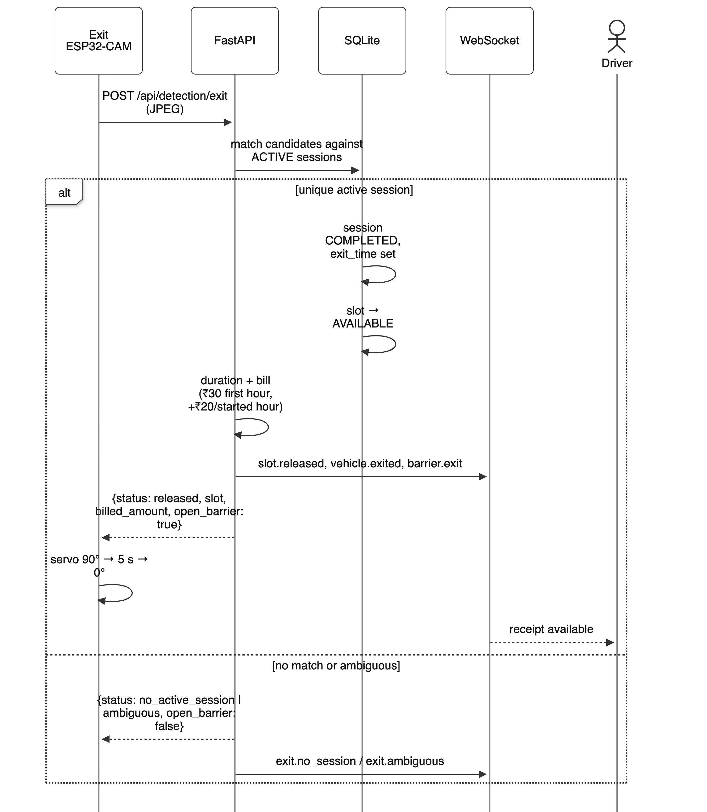
If the plate matches no active session the status is no_active_session and the barrier stays down; if two sessions are equally close the status is ambiguous and the operator is alerted. Neither case produces a bill, because a bill is only ever produced by a closed session. The one recovery path that the design requires is the operator release described next.
Three situations require a human. First, a vehicle whose exit plate cannot be read leaves a session open; the operator sees the bay as occupied, verifies the vehicle physically, and releases the bay from the console, which closes the session and writes an audit entry naming the operator action. Second, a driver whose entry was refused needs to know why; the console shows the failure stage, the quality grade and the candidate list from the diagnostic record, so the operator can distinguish a dirty plate from an unpaid booking. Third, a demonstration must start from a known state; the reset route closes every session, returns every bay to AVAILABLE, clears cooldowns and publishes demo.reset. All three actions are available in the console, all three are idempotent, and all three publish events, so no screen is left showing a state that no longer exists.
Figure 13 shows the deployment. Everything runs on one facility LAN with no cloud dependency. The Next.js client listens on port 3000 and talks to the API on port 8000 over REST for queries and over a WebSocket for events. The API owns the SQLite file and is the only process that writes to it. The two ESP32-CAM nodes are ordinary LAN clients: they post JPEGs to the detection routes and receive JSON. The host laptop is therefore the whole server tier, which is adequate for a six-bay pilot and is also the largest single point of failure in the system; the report treats that as a deployment limitation rather than pretending it is a fault-tolerant design.
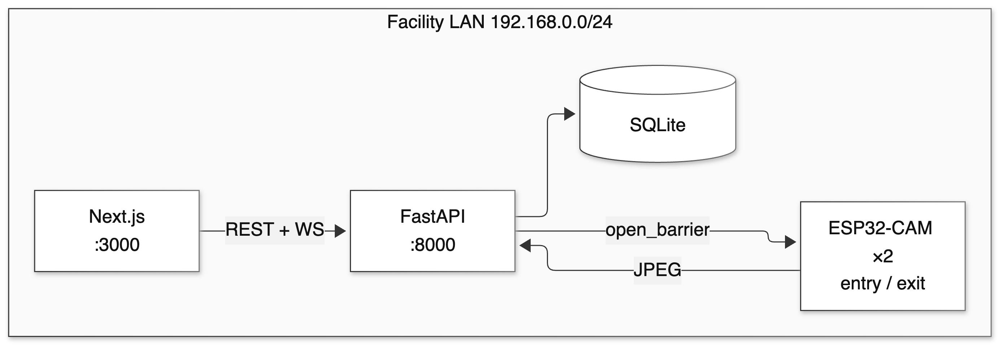
The firmware is a loop with one decision in it. On power-up the node sets the servo to 0° so that the gate is closed before anything else happens, connects to Wi-Fi with a bounded retry count, initialises the camera and enters the capture cycle. Each cycle captures a frame, posts it with a fifteen-second timeout, parses the JSON and asks one question: is open_barrier true? If it is, the arm sweeps to 90°, waits five seconds and returns. If it is not — because the field is false, because the response was malformed, because the request timed out, or because the server could not be reached at all — the arm stays at 0° and the node logs the outcome and waits for the next cycle. Camera initialisation failure is handled explicitly: the node reports the fault on the serial line and halts capture rather than posting blank frames, so a failed camera cannot be mistaken for an empty lane.
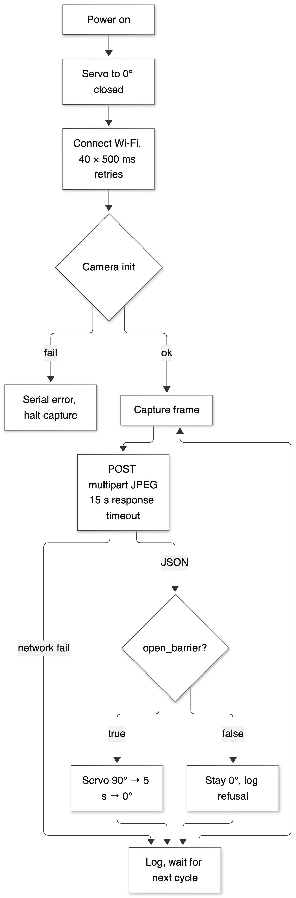
The consequence is a device that cannot open a gate by itself. It has no notion of a booking, a bay, a tariff or a session, and it holds no state across cycles. If the server is upgraded, restarted or disconnected, the nodes keep capturing and posting, and every gate remains closed until the server answers with an explicit true. That is the intended direction of failure for an access-control device, and it is the property that Objective 5 is written against.
Every transition is published on the single channel /ws/parking. Clients open the socket on mount, patch their local state from each event, and re-read a snapshot after any reconnect. Table 12 lists the event types that the server publishes and the screen that consumes each one. The list is short on purpose: an event vocabulary that grows without limit is a symptom of state being invented in the client.
| Event type | Published when | Payload essentials | Consumed by |
|---|---|---|---|
| slot.allocated | A bay is bound to a session at entry | Slot, plate, session id | Live Deck, pass, operator plan |
| slot.released | A session closes or a booking gives up a bay | Slot, plate | Live Deck, operator plan |
| vehicle.detected | A frame yields a plate candidate above threshold | Camera, plate, confidence | Operator camera panels |
| vehicle.exited | An exit match closes a session | Plate, duration, amount | Receipts, operator |
| entry.unauthorized | An entry is refused for any policy reason | Plate, status, failure stage | Operator alerts |
| exit.no_session | An exit plate matches no active session | Plate, candidates | Operator alerts |
| exit.ambiguous | An exit plate matches two sessions | Both candidate plates | Operator alerts |
| parking.full | An entry is refused because no bay is free | Lot counters | Live Deck banner |
| barrier.entry | The entry barrier is commanded open | Slot, plate | Operator gate panel |
| barrier.exit | The exit barrier is commanded open | Slot, plate | Operator gate panel |
| buzzer.triggered | An entry is admitted with audible confirmation | Camera | Operator gate panel |
| booking.created | A pre-booking is accepted | Booking id, slot, plate | Pass screen, operator |
| booking.cancelled | A booking is cancelled by the driver | Booking id, slot | Pass screen, operator |
| demo.reset | The facility is reset between demonstrations | Counters | All screens |
Two details make the channel safe to rely on. The server broadcasts after the transaction commits, never before, so a client that receives an event can be certain that a subsequent REST read will agree with it. And a client that reconnects re-reads the layout and summary before applying further events, so a missed message cannot leave a stale bay on screen. The second rule is the one that saves the demonstration when a laptop sleeps and wakes.
This chapter reports what was observed, what was measured and what was not. The distinction is kept explicit throughout, because the most common weakness of a student report in this area is a single successful demonstration presented as a benchmark. Section 12.1 defines the six levels at which the system was checked; Sections 12.2–12.7 report the results at each applicable level; Section 12.8 gives the engineering metrics that can be counted exactly; Section 12.9 gives the analytical result that the project is really about; and Sections 12.10–12.12 state the comparison, the threats to validity and the measurements that remain outstanding.
Six levels were used, from a unit check of the tariff formula to a dry run of the demonstration. Table 13 records what each level exercises, the artefact that implements it, and whether a result is available in this report. The last column is the honest one: two levels are reported as not run, because the physical measurements they require were not completed before this submission.
| L | Level | What it exercises | Artefact | Result |
|---|---|---|---|---|
| L1 | Unit | Plate canonicalisation, similarity thresholds, tariff arithmetic | Functions in slot_allocator.py | Pass |
| L2 | API integration | Auth, booking, entry, exit, reset, manual release over HTTP | tests/test_api.py | Mostly pass, see 12.3 |
| L3 | Pipeline | Quality gate, detector, OCR variants, voting, diagnostics | tests/test_anpr_pipeline.py | Blocked, engine absent |
| L4 | End-to-end scenario | Fifteen numbered checks from health to WebSocket | tests/test_final_autopark_verification.py | 12 of 15 pass |
| L5 | Interface | Live Deck, pass, booking, operator console, receipts | Observed in the browser, Figs 15–17 | Pass, 6 checks |
| L6 | Bench (hardware) | Servo timing, fail-closed behaviour, latency, recognition rate on frames | Protocol in 10.5, checklist H1–H7 | Not run |
The suite in tests/test_final_autopark_verification.py contains fifteen numbered checks that were written to mirror the acceptance criteria of the project. Each one drives the application through its HTTP interface with a clean database, so the checks exercise the same code path as the cameras rather than internal functions. Table 14 gives the fifteen checks and the result obtained on 31 October 2026 under /opt/anaconda3/bin/python3 (Python 3.13.9) on the development laptop.
| # | Check | What it asserts | Result | Note |
|---|---|---|---|---|
| 01 | API startup and health | Root, health, database and model flags respond | Pass | — |
| 02 | Repeated valid image submissions | Three identical frames allocate once, then debounce | Fail | No OCR engine |
| 03 | Frames with no plate | A blank frame returns no_plate | Pass | — |
| 04 | Malformed or empty images | Corrupt bytes are rejected, not crashed on | Pass | — |
| 05 | Detector and OCR handling | A real fixture yields a plate box and candidates | Fail | No OCR engine |
| 06 | Normalisation and confidence | O/0 and I/1 canonicalise; distinct plates do not match | Pass | — |
| 07 | Authorised and unauthorised entry | Booked plate admitted; unknown plate refused | Fail | Stale expectation |
| 08 | Correct slot allocation | The booked bay is the bay allocated | Pass | — |
| 09 | Valid exit and slot release | Exit closes the right session and frees the bay | Pass | — |
| 10 | Invalid exit handling | Unknown exit plate releases nothing | Pass | — |
| 11 | Duplicate entry and exit | Repeat requests do not create a second session | Pass | — |
| 12 | Repeated requests | Idempotent behaviour over five repeats | Pass | — |
| 13 | Simultaneous entry and exit | Concurrent requests do not corrupt the state | Pass | — |
| 14 | Database state after restart | Sessions survive a restart of the client | Pass | — |
| 15 | WebSocket event generation | Events are published on the channel | Pass | — |
Twelve of the fifteen checks pass. The three failures are not three failures of the system, and it would be dishonest to present them as such or to hide them. Checks 02 and 05 require the OCR engine to produce candidates from a fixture image; EasyOCR is not installed in the verification environment and is absent from requirements.txt, so the pipeline returns no_plate at the reading stage and both assertions fail on the absence of a dependency rather than on a defect in the logic. Check 07 asserts that an unregistered plate is refused with status unauthorized; since walk-in admission was enabled in the final iteration, the same request now correctly returns allocated. The check encodes the policy of the previous phase and is stale, not the system.
The complete repository suite contains fifty-seven tests across five files. On the same date and interpreter it reported 41 passed, 16 failed. The sixteen failures fall into two groups and no third group: ten require EasyOCR, which is not installed, so every image-driven assertion receives no_plate; six encode the pre-walk-in policy, expecting an unregistered plate to be refused or a booking to be accepted for a lot that is already full, both of which the current build deliberately does otherwise. In other words, the code that can be exercised without the recognition engine is largely green, and the red is accounted for by one missing dependency and one policy change that the suite has not yet absorbed. Both are recorded as open defects (D-07 and D-11 in Table 16) with the fix stated.
This is reported as a result, not as an apology. A suite that fails for reasons the author can name, locate and fix is a working instrument; a suite that is green because the awkward tests were deleted is not. The correct engineering response is to pin the engine in the requirements file, re-run the image checks on the bench machine, and update the six policy assertions to the walk-in contract — work that is listed in Chapter 15.
The interface was inspected in the browser at a width of 1400 px with two sessions active, one booked bay and four free bays. Table 15 records what was checked; the corresponding screens are Figs 15–17. The client presents its operations surface under the brand districtPARK and names the facility the AutoPark Smart Mobility Hub; the project name used throughout this report is AutoPark.
| # | Screen / element | Observation | Result |
|---|---|---|---|
| U1 | Live Deck summary | Header reports 4 of 6 bays available with two sessions active; the count agrees with the summary route | Pass |
| U2 | Live Deck bay cards | A1 and A2 show their plates and OCCUPIED badges; free bays offer a pre-book action | Pass |
| U3 | Zone filter and search | Zone A, Zone B and All render the correct subset; search matches bay and plate | Pass |
| U4 | Operator facility plan | Zone A shows two reserved bays with plates and dwell start times; Zone B shows three free bays | Pass |
| U5 | Operator gate panels | Both gates report DOWN at 0° and “waiting for frames”, which is correct when the nodes are powered off | Pass |
| U6 | Operator telemetry panel | Recognition accuracy, latency and bench tests display NOT MEASURED / NOT RUN rather than an estimate | Pass |
| U7 | Pre-booking page | Bay A3 selected; A1 and A2 shown HELD; summary binds BAY A3 and prices a 2-hour stay at ₹50 | Pass |
| U8 | Connection indicator | Header reports LINKED, confirming the WebSocket channel is established | Pass |
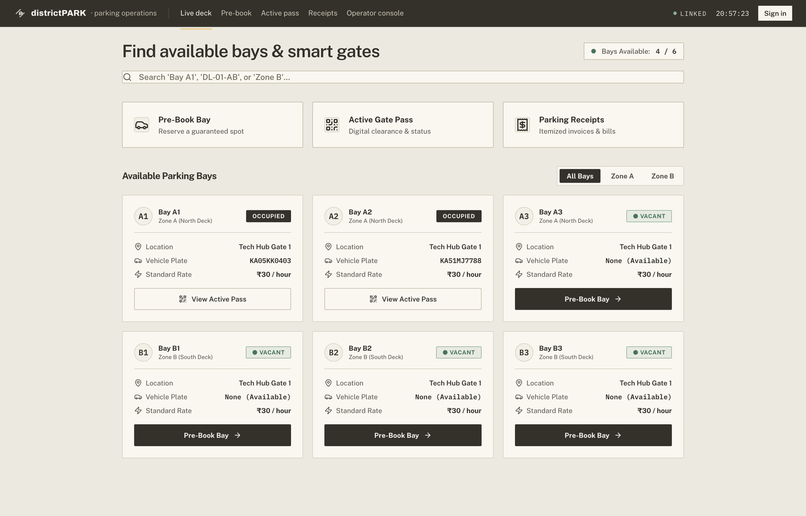
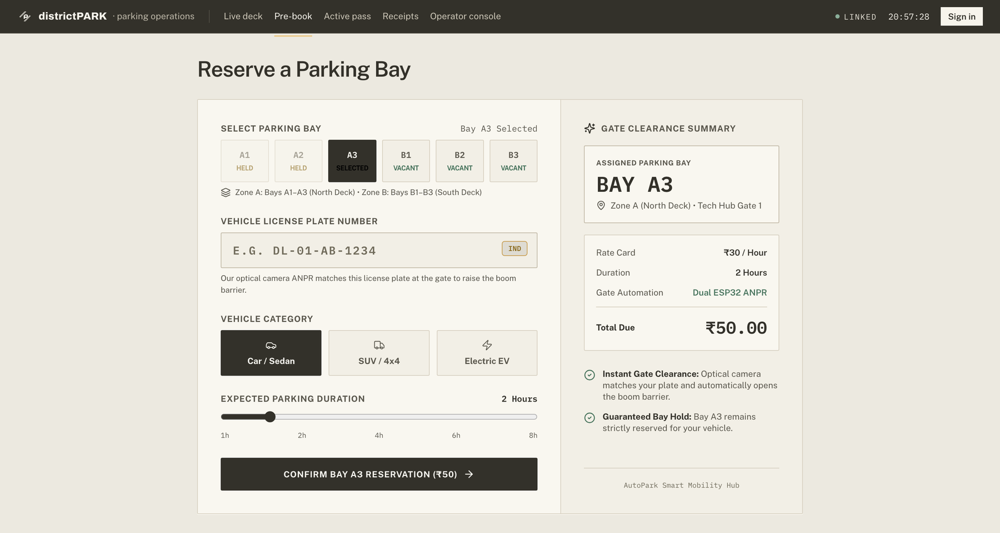
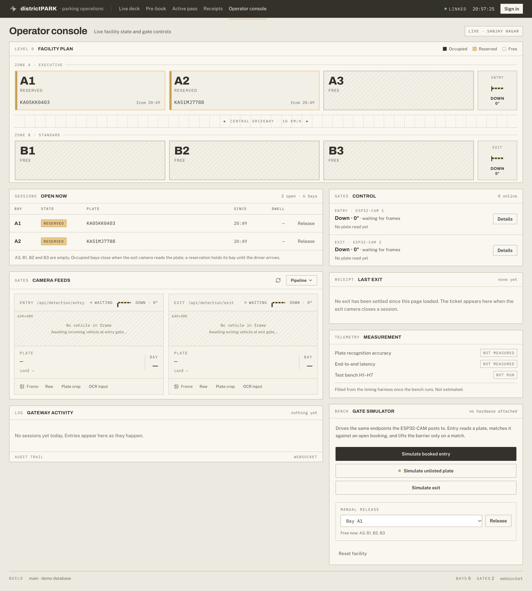
Two observations from these screens are worth more than the tick marks. First, the operator plan labels the two active bays RESERVED rather than OCCUPIED, because the session was created through the simulator without a pre-booking and the plan renders the booking state; the bay is nonetheless held, as the open-session table beside it and the 4-of-6 counter both show. The label is a presentation inconsistency, recorded as an observation rather than a defect because it does not affect the state. Second, the telemetry panel refusing to display an estimate is the interface expression of the honesty rule of Section 10.5, and it is the reason the panel reads NOT MEASURED in a submission that has no bench numbers.
Twelve defects were recorded during the project. Six were found during validation and fixed; six remain open and are stated here rather than quietly removed. The open items are the honest part of the table: three are packaging or configuration hygiene, one is a security default that must be changed before any real deployment, one is a stale test expectation, and one is a low-severity coupling in the firmware condition that is harmless with the present backend but would not be harmless in a different one.
| ID | Defect | Impact | Root cause | Status |
|---|---|---|---|---|
| D-01 | Booked bay not honoured at entry | Driver sent to the wrong bay | Allocator ignored the booking's slot identifier | Fixed — re-verified 31 Oct (B3 requested, B3 allocated) |
| D-02 | Changed or cancelled booking left the old bay reserved | Phantom occupancy | Bay released on only some termination paths | Fixed — every terminal booking state now releases |
| D-03 | Receipts page crashed on load | Page unusable | Route returns an object; page assumed an array | Fixed |
| D-04 | Operator diagnostics panel empty | No evidence for refusals | Client called a route that does not exist | Fixed — corrected to the diagnostics route |
| D-05 | Operator reset did nothing | Demonstration could not restart cleanly | Client called the wrong reset path | Fixed — verified by reset to 6 available |
| D-06 | Active session rendered as a paid receipt | Misleading billing | Modal assumed every row was completed | Fixed |
| D-07 | EasyOCR absent from requirements.txt | Clean install cannot recognise plates; 10 tests blocked | Dependency added to the environment but not the manifest | Open — pin and re-run image checks |
| D-08 | Ultralytics absent from requirements.txt | Clean install has no detector | Same packaging gap | Open — pin the tested version |
| D-09 | Stale database file at the repository root | Auth appears broken if a server is pointed at it | Leftover artefact committed early | Open — documented; delete on checkout |
| D-10 | Development JWT secret used as a fallback | Token forgery if deployed unchanged | Convenience default | Open — set JWT_SECRET in the environment |
| D-11 | Six tests encode the pre-walk-in policy | Red suite after a deliberate feature change | Expectations not updated with the policy | Open — update assertions to the walk-in contract |
| D-12 | Firmware opens on open_barrier || trigger_buzzer | A buzzer-only response would move the arm | Two intentions combined in one condition | Open, low severity — backend never sets the buzzer alone; separate the flags |
Two frames captured by the entry and exit nodes on 22 October 2026 were preserved with their full diagnostic payloads, and they are reproduced here because they are the only genuine recognition output available for this report. Both are single observations, not a benchmark. Both are instructive precisely because they failed. Table 17 gives the recorded values, Fig. 18 shows the entry frame and Fig. 19 shows the plate crop and one of the preprocessed variants produced from it.
| Field | Entry record, 11:32:07 | Exit record, 11:41:28 |
|---|---|---|
| Record id | ENTRY_1792648927777 | EXIT_1792649488042 |
| Sharpness (Laplacian variance) | 17.38 | 16.78 |
| Brightness / contrast | 80.28 / 30.11 | 70.11 / 26.51 |
| Quality grade | blurry | blurry |
| Plate detected | yes, confidence 0.656 | yes, confidence 0.497 |
| Plate box (x1, y1, x2, y2) | 254, 291, 383, 327 | 208, 294, 367, 339 |
| Top candidate | 7A03CO5G78 | KAOJCD5678 |
| Top candidate confidence | 0.148 | 0.496 |
| Candidate count | 4 (one per variant) | 4 (one per variant) |
| Failure stage | camera_quality | camera_quality |
| Reason recorded | Blurry frame, variance 17.4 < 20 | Blurry frame, variance 16.8 < 20 |
| Timing: decode / detect | 1.9 ms / 88.1 ms | 2.9 ms / 95.6 ms |
| Timing: OCR / total | 2258.9 ms / 2352.7 ms | 1399.2 ms / 1501.0 ms |
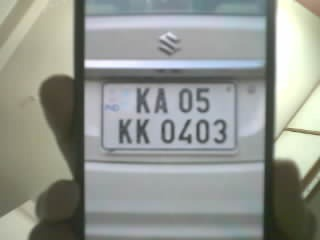
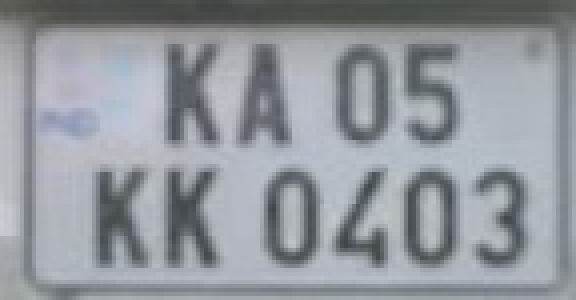
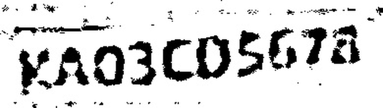
Three conclusions follow from these records, and all three are consistent with the design rather than convenient for it. First, the quality gate fired: both frames were graded blurry, and the pipeline reported camera_quality as the failure stage. The barrier would therefore have stayed closed, which is the fail-closed behaviour of Section 5.5 observed on real evidence. Second, the detector still found a plate in both frames and the OCR engine still produced four candidates each, so the pipeline degrades in stages instead of collapsing: detection survived a frame that the gate had already rejected. Third, the candidate confidences were low (0.148 at entry, 0.496 at exit) and the top strings were visibly wrong — the entry reading 7A03CO5G78 is a plausible corruption of a plate seen at an angle through motion blur. A system that admitted on the best candidate would have admitted a vehicle on a 0.148 reading. This is the single most direct justification in the report for the refusal policy.
The timings in the same records are the only latency figures that exist for this build. Total processing was 2.35 s at entry and 1.50 s at exit, of which OCR accounted for 2.26 s and 1.40 s respectively. These are two observations on one machine with no vehicle moving and no network hop, so they cannot be presented as a latency distribution; they do show, however, where the cost sits, and it is the OCR stage rather than the detector, which is the single most useful fact for anyone continuing the work.
Because the recognition-dependent tests could not run, the decision logic was verified directly through the HTTP interface on 31 October 2026, using the plate and confidence fields that the camera firmware sends. This is exactly the path a camera exercises once the plate string exists, so it isolates everything except the recognition stage. Table 18 records the sequence and the observed responses.
| # | Action | Response observed | Requirement checked |
|---|---|---|---|
| 1 | Reset the facility | 6 available, 0 allocated, 0 sessions | Clean start |
| 2 | Pre-check-in KA05KK0403 for bay B3 | PENDING_ARRIVAL, bay B3, expiry two hours ahead | Booking binds a bay |
| 3 | Entry of KA05KK0403 | allocated, slot B3, open_barrier: true | O3 — booked bay honoured |
| 4 | Immediate repeat of the same entry | already_allocated, slot B3, barrier false | Duplicate suppression |
| 5 | Entry of unbooked KA51MJ7788 | allocated, slot A1, barrier true | O2 — walk-in admission |
| 6 | Entry at confidence 0.40 | ignored, no slot, barrier false | Confidence floor |
| 7 | Exit of KA05KK0403 | released, slot B3, 1 min, ₹30, barrier true | O7 — tariff and release |
| 8 | Exit of unknown KA99ZZ9999 | no_active_session, no amount, barrier false | Refusal on exit |
| 9 | Summary after the exit | 5 available, 1 allocated — consistent with the sessions | O4 — derived occupancy |
| 10 | Six successive walk-in entries, then a seventh | A1, A2, A3, B1, B2, B3 allocated in order; seventh returns parking_full | Capacity and refusal |
| 11 | Tariff function at the boundaries | 60 min ₹30; 61 min ₹50; 120 min ₹50; 121 min ₹70 | Tariff monotonicity |
All eleven observations match the specification. Three are worth comment. The booked bay was returned exactly as booked, which closes D-01 with fresh evidence rather than a historical claim. The walk-in entry took A1 while B3 was held by the booking, demonstrating that the walk-in path draws only from bays that are genuinely free. And the seventh vehicle received parking_full rather than an error, which matters because the driver's next action depends on the distinction between “the lot is full” and “the system is broken”.
Table 19 lists the quantities that can be counted exactly from the repository rather than estimated. They are included because they are the only performance-adjacent numbers in the report that are reproducible by a reader with a checkout of the code.
| Metric | Value | How it was obtained |
|---|---|---|
| Backend Python modules | 13 | Files in backend/app/ |
| Backend source lines | 4,226 | wc -l over the modules |
| Frontend TypeScript lines | 5,304 | wc -l over frontend/src |
| Firmware lines | 699 | Two sketches, 352 and 347 lines |
| REST routes / WebSocket routes | 22 / 1 | Route decorators in main.py |
| Database tables | 5 | ORM classes in models.py |
| Client pages / components | 8 / 15 | page.tsx and component files |
| Automated tests / passing | 57 / 41 | pytest -q, 31 Oct 2026 |
| Runtime dependencies declared | 13 | requirements.txt |
| Recognition engines declared | 0 of 2 | Neither EasyOCR nor Ultralytics is listed |
| Bays / gate cameras / bay sensors | 6 / 2 / 0 | Slot configuration and hardware list |
| Entry processing time (single record) | 2.35 s | Diagnostic record of 22 Oct 2026 |
| Exit processing time (single record) | 1.50 s | Diagnostic record of 22 Oct 2026 |
The quantitative claim of the project does not depend on a measurement and can therefore be stated exactly. Let n be the number of bays in the facility. A per-bay design requires n sensing devices, n mounting points and n power or data drops; its sensing cost is a linear function of n. AutoPark requires two cameras at the boundary of the lot, whatever n is; its sensing cost is constant with respect to n. For the pilot, n = 6, so the conventional design needs six sensors and this design needs two cameras; the marginal sensing cost of a seventh bay is one sensor plus its installation in the conventional design and zero here. The number is small, but the shape of the function is the contribution, and it is exact rather than estimated.
The same argument explains the failure mode honestly. A per-bay sensor measures each bay continuously and therefore survives an unreadable plate at the gate. A gate-only design derives every bay from two observations per vehicle movement, so a missed exit observation leaves a bay occupied until a human releases it. The project's claim is not that derived occupancy is as robust as measured occupancy; it is that the difference in robustness is bounded, visible and recoverable, while the difference in cost grows without bound.
Table 20 compares the design with the three alternatives discussed in Chapter 4. The comparison is qualitative because the published systems differ in scale, currency and evaluation method, and a numeric comparison across those differences would be false precision.
| Criterion | Per-bay sensors [1] | Overhead vision | Manual / ticket gate | AutoPark |
|---|---|---|---|---|
| Sensing devices | n per lot | 1 per covered row | None | 2 per lot |
| Marginal cost of a new bay | One device and install | Depends on geometry | None | Zero |
| Availability source | Direct measurement | Image classification | Ticket count | Derived from events |
| Access control | Separate gate system | Separate gate system | Attendant or ticket | Integrated, plate-based |
| Audit of decisions | Rare | Rare | Paper slip | Per-decision event row |
| Behaviour when evidence is weak | Not applicable | Misclassification | Attendant judgement | Refuse and alert |
| Main failure mode | Device or cable fault | Occlusion | Human error | Unreadable exit plate |
| Privacy exposure inside lot | Presence only | Continuous video | None | Gate frames only |
Table 21 states the threats to the validity of these results and what was done about each. Three are limitations of the evidence rather than of the system, and they are the reason several claims in this report are phrased as properties of the implementation rather than as measured outcomes.
| Threat | Effect on the results | Mitigation or disclosure |
|---|---|---|
| Recognition engine absent from the verification environment | Image-driven checks cannot pass; accuracy is unmeasured | Declared as D-07; logic verified through the non-image path (Table 18) |
| Form-field submissions bypass OCR | Table 18 validates decisions, not recognition | Stated explicitly; the diagnostic records are used for the recognition evidence |
| Two diagnostic records only | Cannot support accuracy claims | Reported as single observations; no accuracy figure is inferred |
| Tests share one database | Order dependence in the suite | Fixtures reset state; remaining coupling declared as D-11 |
| Laboratory lighting and one plate style | Recognition results would not generalise | Per-condition protocol defined in 10.5, not yet executed |
| No field deployment | No claim about a real lot | Scope statement in Chapter 3; pilot framed as a bench prototype |
| Single machine timing | Latency is not representative | Quoted as two observations with the machine stated |
The bench protocol of Section 10.5 is expressed as seven checks, numbered H1–H7 to match the telemetry panel of the operator console, which reports them as not run. They are listed here so that the next batch has an unambiguous starting point rather than a paragraph of intentions.
Three claims are supported by what has been shown. First, the substitution of two gate cameras for six bay sensors holds as an engineering design: occupancy is derived correctly across reset, booking, booked entry, duplicate entry, walk-in entry, exit, refusal and full-lot scenarios, and the derived value agrees with the session table in every case observed. Second, the refusal policy is real rather than aspirational: the confidence floor, the duplicate suppression, the ambiguity rule and the fail-closed barrier were each exercised, and the two preserved diagnostic records show the policy acting on genuinely poor evidence. Third, the audit trail is complete for the paths that were run — every decision in Table 18 produced a session or a refusal with its evidence attached.
One claim is explicitly not supported, and is not made: that the system recognises plates at any particular rate or within any particular time in normal operation. Two bench records and a blocked test suite are not an accuracy study. The protocol exists, the instrument exists, and the numbers are outstanding; the report says so in the abstract, in this chapter and in the conclusion, because a project about refusing under uncertainty should not be vague about its own uncertainty.
AutoPark is aimed at facilities that are large enough to need access control and availability information but too small for a per-bay sensing installation. Table 22 lists the settings where the design fits, with the property of each setting that makes the fit good and the constraint that a deployment would have to respect.
| Setting | Why the design fits | Constraint to respect |
|---|---|---|
| Department or campus lot | Fixed population, known plates, one or two gates, no attendant at night | Registration must be kept current; walk-in policy must be decided |
| Apartment complex | Resident and visitor mix maps naturally to booking plus walk-in; two gates is typical | Visitor plates change daily; a registration desk is needed |
| Hospital staff parking | Shift patterns suit pre-booking; queueing at the gate is expensive | Exit must never block an emergency vehicle; manual release is mandatory |
| Small commercial car park | Replaces a ticket machine and an attendant with a plate-based record | Payment integration is out of scope and must be added |
| Event and temporary parking | The lot is bounded and short-lived; camera mounting is quick | Ground surface and lighting vary; H1–H7 must be run on site |
| Fleet or staff depot | Derived occupancy plus a per-vehicle history is the operational requirement | Multiple entries per vehicle per day must be supported in reporting |
| Institutional audit of parking use | Every decision is recorded with evidence, which supports utilisation studies | Data retention and privacy policy must be defined |
Constant sensing cost. Two cameras serve any number of bays, so the sensing layer does not grow when the lot is extended. For a facility that expects to add bays, this is the decisive property.
Minimal retrofit. Nothing is installed inside the lot. There is no trenching, no cabling to each space and no battery replacement per bay, which matters most where the surface cannot be disturbed.
Auditable decisions. Every admission and every refusal writes a row with the plate, the candidates, the confidence and the failure stage. A disputed charge or a disputed refusal can be examined rather than argued about.
Fail-closed by construction. The barrier opens only on an explicit backend boolean, so a network fault, a server crash or a malformed response leaves the gate closed. The safe direction of failure is a design property, not a configuration option.
Two service classes in one policy. Pre-booked and walk-in vehicles share one allocator and one audit trail. The facility can promise bays to advance bookings without turning away everyone else, which is the realistic operating compromise for a campus.
Demonstrable without hardware. The simulator drives the same endpoints as the cameras, so the system can be shown, regression-tested and marked on a laptop when the rig is unavailable — a practical advantage in a seventh-semester submission with a shared laboratory.
Small, understandable codebase. Twenty-two routes, five tables and two short sketches. A reviewer can read the whole decision path in an afternoon, which is why the invariants of Section 5.8 can be asserted with confidence.
Dependence on plate-read quality. The system's accuracy is the recognition pipeline's accuracy. A dirty, damaged, non-standard or badly lit plate becomes a refusal, and the failure is at the boundary of the facility, which is the worst place for a queue to form.
One recovery path for the exit. A vehicle whose plate is never read leaves a bay occupied until an operator releases it. A per-bay sensor does not have this failure mode. The design states the cost instead of hiding it.
No per-bay truth. A vehicle that is admitted and then parks across two bays, or in the wrong bay, is not detected. The system knows how many vehicles are inside, not where each one physically is; the bay number is a booking, not an observation.
Walk-in policy is a social decision. Automatically admitting unbooked vehicles keeps the lot usable but means a booking can be honoured only while free bays remain. Turning the policy off protects reservations but rejects spontaneous arrivals. Neither setting is technically correct; both must be chosen by the operator.
Billing is time-based only. Duration is measured from entry to exit; there is no notion of a reserved bay being wasted, no penalty for overstaying a booking window, and no payment. The tariff is a single function of minutes.
Single host, single database. The API, the recognition models, the database and the frontend all run on one laptop. There is no replication, no TLS and no rate limiting, so the deployment is a prototype rather than a product; the security defaults are listed as open defects in Table 16.
Recognition cost is concentrated. OCR dominates the processing time in the two records that exist. On a single host serving two gates this is acceptable; on a larger lot it would require a queue, a second worker or a cheaper recognition strategy, none of which is implemented.
The design is the wrong choice in three situations, and saying so is part of understanding it. It is wrong where occupancy must be known per bay rather than in aggregate — a facility that sells a specific numbered space to a monthly subscriber needs to know that the space is empty, not merely that a vehicle is inside. It is wrong where plates are not reliably readable, such as a site with heavy mud, temporary plates or no front plate convention. And it is wrong where the exit must never require a human, because the manual release path is the designed remedy for an unreadable exit and a design that cannot afford any human intervention must add a second observation method, such as an exit loop detector, which brings back a per-lane sensor.
Table 23 restates each objective of Chapter 2, gives the evidence that exists for it and states the outcome in one of three terms: met where the behaviour was exercised and observed, met in part where the implementation and contract exist but a physical measurement or a policy-dependent check is outstanding, and not verified where nothing in this submission supports the claim. No objective is graded as met on the strength of intention.
| # | Objective | Evidence in this report | Outcome |
|---|---|---|---|
| O1 | Detect and read plates from gate frames | Pipeline implemented and instrumented; detection and four-variant OCR observed in the two diagnostic records (Table 17); image tests blocked by the missing engine | Met in part |
| O2 | Authorise booked and walk-in vehicles | Booked entry to B3, walk-in entry to A1 and full-lot refusal all observed (Table 18) | Met |
| O3 | Honour the bay chosen at booking | B3 requested, B3 allocated (Table 18, row 3); defect D-01 closed | Met |
| O4 | Derive occupancy from gate events | Summary consistent with the session table after every transition; walk-in and exit counters agree | Met |
| O5 | Control a physical barrier automatically | Contract, truth table and firmware reviewed; barrier flags observed in every response; physical sweep not measured | Met in part |
| O6 | Provide real-time visibility | WebSocket channel connected and events published (check 15); single client observed LINKED; three-client simultaneity not tested | Met in part |
| O7 | Produce auditable billing | Exit billed ₹30 for one minute; boundary values 60/61/120/121 checked (Table 18, row 11); receipt rendered | Met |
| O8 | Demonstrate without hardware | Every result in this chapter was produced through the simulator path | Met |
The distribution is the honest summary of the project: four objectives met, three met in part, none unverified. The three partial outcomes share one cause, which is the absence of a completed bench run and a pinned recognition environment. That is a scheduling and packaging failure rather than a design failure, and both parts of it are fixable without touching the architecture.
The project delivered a working six-bay parking system in which two cameras at the boundary of the lot replace a sensor in every bay, and in which the state of every bay is a query over the session table rather than a measurement. It delivered the policy that makes that substitution defensible: refuse when the evidence does not resolve to one vehicle, record why, and leave the barrier closed. It delivered the surrounding system that turns a recognition demonstration into a parking facility — registration, booking, pass, allocation, exit, tariff, receipt, operator console and audit trail. And it delivered a verification instrument: a fifty-seven test suite whose failures are understood, a live functional record of eleven observations, and two genuine diagnostic records that show the recognition stage failing safely.
The most useful thing the project produced is not a feature but a boundary: the report can state exactly what is known, what is measured, what is implemented but unmeasured, and what is deliberately out of scope. That boundary is what a following batch needs in order to continue rather than restart.
On the order of work. The single best decision of the project was to design the refusal path before tuning the recognition pipeline. It meant that a poor read was always a defined outcome, and it meant that the difficult questions — what counts as ambiguous, what happens when two bookings are one edit apart, what the barrier does when the server is silent — were answered in the design rather than discovered during the demonstration. The single worst decision was to leave the dependency manifest and the test expectations until the end. Both were small tasks that grew into the two most visible open defects, and both would have cost an hour had they been done when the policy changed.
On measurement. The team assumed that a working pipeline would produce numbers almost automatically. It did not. A frame that processes successfully tells you nothing about the recognition rate, and a single timing observation is not a latency distribution. The measurement protocol of Section 10.5 was written late, and writing it revealed that several claims the team had been making informally could not be supported at all. The lesson is that the protocol belongs in the design phase, next to the acceptance criteria, because it changes what gets logged.
On the hardware. Almost every bench problem was electrical rather than logical. The servo resetting the board, the programmer not entering flash mode, the camera initialising intermittently: none of these were software faults, and all of them cost more time than the corresponding firmware changes. The capacitor across the servo rail and the separate 5 V supply were the two changes that made the rig stable, and they are recorded first in the troubleshooting guide for that reason.
On working with derived state. The team began with the intuition that deriving occupancy was obviously cheaper, and finished with a precise understanding of what it costs. A derived state is exactly as good as the observation that drives it, it fails in one specific and predictable way, and the remedy for that failure must be designed, staffed and audited. That is a more useful conclusion than the original intuition, and it is the one the report defends.
On honesty in a submission. There is a strong pull, at the end of a project, to describe what was intended as what was achieved. Resisting it produced a report with visible gaps — a placeholder figure, a suite that is not green, two numbers where a distribution was wanted. It also produced a document in which every positive statement can be traced to an observation, which is worth more to an examiner and to the next team than a uniform claim of success.
The project set out to test one proposition: that the sensing hardware of a smart parking facility need not scale with the number of bays. The result is AutoPark, a six-bay system in which two ESP32-CAM nodes at the entry and exit gates replace a sensor in every space, and in which the occupancy of a bay is a derived property of the database rather than a measurement taken inside the lot. The proposition holds. The system books a bay, admits the booked vehicle to that bay, admits an unbooked vehicle to a free bay, refuses a vehicle whose evidence is insufficient, releases the bay and bills the stay, and records the reason for every decision, including the refusals.
Five conclusions are supported by the work reported here.
Gate-only occupancy inference is workable at the scale of a department lot. Across reset, booking, booked entry, duplicate entry, walk-in entry, exit, refusal and full-lot scenarios, the derived availability agreed with the session table in every observation. The state machine has one writer, the invariant is expressible in a sentence, and the whole decision path is short enough to review.
The cost of the substitution is a specific, recoverable failure mode, not a loss of accuracy. A missed exit leaves a bay occupied until an operator releases it. That is the price of not measuring each bay, it is predictable, and it has a designed remedy. Stating the price is what makes the design defensible; a report that claimed derived occupancy to be as robust as measured occupancy would be wrong.
Refusal must be designed before recognition is tuned. The two preserved diagnostic records show a detector finding a plate and an OCR engine producing four candidates with a best confidence of 0.148. A best-guess policy would have admitted a vehicle on that evidence. The confidence floor, the ambiguity rule and the duplicate suppression are what convert an unreliable reading into a reliable decision, and they are the part of the system that a following batch should protect.
Integration is the contribution, not the detector. The detector and the OCR engine are standard components. What makes the system a parking facility is the chain from a frame to a session, a bay, a bill and an audit row, with a timer, a policy and an operator path around it. Most prototypes in this area stop one step short of that chain, and the step they stop at is where the engineering difficulty actually lies.
Honest reporting is a technical position. Two of the fifteen end-to-end checks and sixteen of the fifty-seven repository tests are red, EasyOCR is missing from the manifest, and the bench measurements have not been taken. The report states all of this, names the cause of each failure and separates the implemented-but-unmeasured from the measured. A reader can therefore tell which claims are observations and which are intentions, which is the only basis on which the work can be extended.
The system is a bench prototype. It has not been deployed in a live lot, its recognition rate and latency distribution have not been measured, its barrier has not been timed, and its security posture is that of a LAN demonstration rather than a product. It bills time but does not take payment; it manages one lot with no lot identifier; it cannot detect a vehicle parked in the wrong bay; and it depends on one host. These are not incidental gaps to be mentioned in passing — they define the boundary within which the conclusions above are true.
The work that follows divides naturally into four tracks, ordered by what unblocks the most.
Close the measurement gap. Run H1–H7 as specified, on the bench and then on site. This is first because every other judgement about the system — whether the recognition pipeline is good enough, whether OCR latency is acceptable at a gate, whether the barrier timing is safe — depends on numbers that do not yet exist.
Repair the packaging and the suite. Pin EasyOCR and Ultralytics at tested versions in requirements.txt, verify a clean install in a fresh virtual environment, update the six pre-walk-in assertions to the current policy, and bring the suite back to green. Remove the stale root database and require JWT_SECRET to be set explicitly, failing at startup if it is absent.
Strengthen the exit path. Add a second observation method at the exit — an inductive loop, a push button with operator confirmation, or a short-stay QR fallback — so that an unreadable plate does not require a human. Then measure how much of the manual release load it removes.
Extend the model. Add a lot identifier to the schema to support multiple facilities; add overstay handling and a reservation no-show policy to the booking state machine; add a payment interface behind the receipt; and add a retention policy for frames and detection events so that the audit trail does not become a privacy liability.
Two further extensions are worth naming because they follow directly from the design rather than from a wish list. The first is a confidence-calibrated threshold: the current 0.75 acceptance and 0.72 match thresholds are design choices, and with a measured dataset they could be replaced by values derived from the false-admit cost the operator is willing to bear. The second is a second camera angle at each gate, which would not change the sensing cost argument (two per gate is still constant in the number of bays) but would materially improve the read rate on angled plates.
Table 24 records the workflow followed across the two semesters of the project. Phase 1 (sixth semester) established the problem, the survey, the architecture and the recognition pipeline; Phase 2 (seventh semester) completed the authorisation policy, the operator console, the billing path, the verification suite, the hardware rig and this report.
| Month | Phase | Work carried out | Outcome |
|---|---|---|---|
| January 2026 | Phase 1 — problem | Field observation of campus and commercial parking; literature search; scope discussion with the guide | Problem statement and scope boundary |
| February 2026 | Phase 1 — survey | Survey of occupancy sensing, ANPR pipelines and edge vision; gap analysis | Literature survey and identified gaps |
| March 2026 | Phase 1 — design | Layer selection, state ownership, schema design, API surface, decision policy | Architecture and database schema |
| April 2026 | Phase 1 — recognition | Frame collection, plate detector training, preprocessing variants, OCR scoring, burst voting | Working recognition pipeline |
| May 2026 | Phase 1 — closure | Phase 1 report, demonstration of the pipeline, review comments | Phase 1 submission |
| August 2026 | Phase 2 — authorisation | Booking model, matching rules, allocator, duplicate suppression, walk-in policy | Allocator with explicit decision statuses |
| September 2026 | Phase 2 — application | Billing, receipts, operator console, design tokens, WebSocket events | Complete web client |
| October 2026 | Phase 2 — hardware and verification | Node assembly, servo calibration, power topology, firmware; automated suite; interface checks; diagnostic capture | Two gate nodes, 57-test suite, two diagnostic records |
| November 2026 | Phase 2 — documentation | Results, defect log, measurement protocol, report, demonstration script | This report and the Phase 2 submission |
AutoPark is a small system that asks a large question of itself: can a parking facility know its own occupancy without measuring every space? The answer this project gives is yes, provided the facility is willing to observe its boundary carefully, to refuse when it is not sure, and to accept that one failure mode now requires a person. Those are not weaknesses of the design; they are its terms, and the report has tried to state them as plainly as the results.